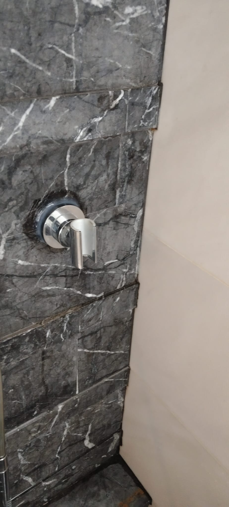

Leaking tap or pipe in your HDB? Common fixes and when to call a plumber

A leaking tap is the most common plumbing complaint in any HDB flat, and most of the time it is a small, cheap fix. A constant drip is usually a worn washer or cartridge you can swap out; a leak under the sink or behind a wall is more serious. This guide on HDB plumbing walks through the common causes, the simple fixes you can try yourself, indicative leaking tap repair costs in Singapore, and the clear point at which you should stop and call a licensed plumber.
First, work out what kind of leak you have
Not every leak is the same job. A dripping spout is minor; water pooling inside the cabinet or a damp patch on the wall is not. Use the table below to match what you are seeing to the likely cause and whether it is a reasonable DIY job or one for a pro.
| Symptom | Likely cause | DIY or pro? |
|---|---|---|
| Tap drips from spout when fully closed | Worn washer or ceramic cartridge | DIY (simple) |
| Water seeps from base / handle of tap | Perished O-ring or loose packing nut | DIY or handyman |
| Puddle inside the sink cabinet | Loose trap, waste fitting or supply hose | DIY or handyman |
| Weak flow at one tap only | Clogged aerator or inline filter | DIY (simple) |
| Damp wall / floor, no visible source | Concealed supply pipe leak | Pro (licensed plumber) |
| Leak near water heater | Faulty connection, valve or heater fault | Pro |
Before you touch anything: turn off the water
The first move with any leak is to stop the water, so you are not working against pressure and can't make a small drip into a flood.
- Isolation valve. Most basins and sinks have a small angle valve (angle stop) on the supply pipe directly underneath. Turn it clockwise to shut off just that fixture.
- Main stopcock. If there is no isolation valve, find the main stopcock for your flat — usually near the water heater, kitchen, or service yard — and turn it off. This cuts water to the whole unit.
- Drain the pressure. Open the leaking tap after shutting off to let the remaining water run out before you start.
If you can't find or turn the stopcock, that alone is a good reason to call someone in rather than risk it.
Fixing a dripping tap: replacing a worn washer or cartridge
A spout that drips after you have firmly closed the tap is the textbook worn-seal problem. Older compression taps use a rubber washer; modern mixer taps use a ceramic cartridge. Both are inexpensive parts. Here is the general sequence — exact steps vary by tap model.
- Shut off the water at the isolation valve or stopcock and open the tap to drain it.
- Pop off the decorative cap on the handle and remove the screw underneath, then lift the handle off.
- Unscrew the retaining nut or bonnet with a spanner to expose the washer or cartridge.
- Note how the old part sits, then pull it out. Take it to the hardware shop to match an exact replacement.
- Fit the new washer or cartridge the same way round, lightly greasing the O-rings if supplied.
- Reassemble in reverse, turn the water back on slowly, and check for drips before refitting the cap.
If the drip continues after a fresh washer, the valve seat may be worn or scored, which usually means the tap body itself needs replacing — at that point it is faster to swap the whole tap.
Leaks under the sink: traps and waste fittings
Water collecting inside the cabinet rather than from the spout is often the trap (the U-bend) or a waste connection working loose, or a cracked flexible supply hose. Many of these are hand-tight fittings:
- Dry everything, then run the tap and watch where the bead of water forms — that tells you the source.
- A loose slip-nut on the trap can often be hand-tightened or resealed with a fresh washer.
- A perished flexi-hose should be replaced, not patched; they fail with age and can burst.
- If the leak is from a cracked pipe rather than a joint, that's a replacement job, not a tighten-and-go.
Low water pressure at one tap
A single tap running weak is usually nothing dramatic. The aerator — the mesh screen on the spout tip — clogs with sediment and limescale over time. Unscrew it by hand or with a cloth-wrapped plier, rinse out the debris, soak it in vinegar if it's crusted, and screw it back on. If pressure drops suddenly across the whole flat, especially alongside damp patches or a jump in your water bill, treat that as a possible hidden leak and have it checked.
Water heater leaks
Leaks at or around a water heater are not a DIY job. The connections carry hot water under pressure, and a storage heater also has a pressure-relief valve that can drip for its own reasons. Switch off the heater at the isolator, shut the water supply to it, and get a professional to inspect. Don't keep running a heater that is leaking.
When it's a concealed pipe — call a pro
The leaks worth taking seriously are the ones you can't see directly: a damp patch spreading on a wall, a floor that stays wet, a musty smell, or paint and skirting starting to bubble with no tap nearby. These point to a concealed supply pipe leaking inside the wall or floor screed.
This is firmly plumber territory. Tracing a concealed leak may involve moisture meters, opening up tiling, and re-doing waterproofing afterwards — and where the leak is on the incoming water service, the law matters. PUB requires a licensed plumber for certain water-service works connected to the public supply, so for these jobs use a PUB-licensed plumber rather than a general handyman. You can check requirements on the PUB website.
What leaking tap repair costs in Singapore
Plumbing is usually priced per job plus a call-out, not by the hour. The ranges below reflect the typical Singapore market — treat them as indicative and always confirm a fixed quote before any work begins.
- Washer / cartridge replacement: roughly $60 – $120 including call-out.
- Replace a whole tap: about $80 – $180 plus the cost of the tap.
- Trap or waste / flexi-hose repair: around $80 – $150.
- Concealed pipe leak (trace & repair): $150 – $400+, more if hacking and re-waterproofing are needed.
Bundling jobs into one visit — say a leaking tap plus a slow drain plus a wobbly toilet flush — spreads the call-out across the whole appointment.
Why ignoring a leak costs more later
A drip feels harmless, so it gets left. The problem is what slow, constant moisture does over time. Water sitting against a wall or floor breaks down the waterproofing membrane, and once that fails, water finds its way down. In an HDB block that often means an inter-floor leak into the unit below — and that turns a $80 repair into a neighbour dispute, professional leak detection, and shared repair costs that can run into the thousands. Fixing the leak early is always the cheaper path.
Getting it sorted by RK E&C
RK E&C is a Singapore-registered renovation and handyman company (UEN 202442767D) handling everyday plumbing, fixture fixing and HDB repairs island-wide. We change taps and cartridges, sort out leaking traps and waste fittings, and where a job needs a licensed plumber we'll tell you straight rather than bodge it. While we're on-site we can also handle other small jobs — like mounting a TV on the wall — in the same visit.
Send a photo of the leak and your postal code and we'll give you a fixed price — usually the same day.
Got a leak that won't stop?
Send us a photo and your postal code. Fixed-price quote, honest advice on whether it needs a licensed plumber, island-wide.
Prices are indicative of the Singapore market in 2026 and not a quotation. Certain water-service works require a PUB-licensed plumber. Confirm a fixed price with your provider before work begins.